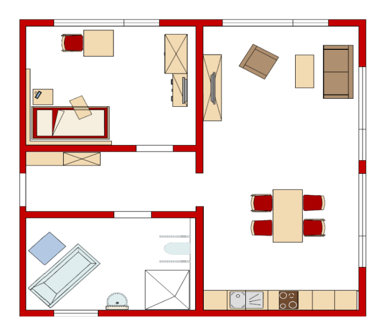

FCL-Flur
- LED-Lichtfeedbacksystem und Audio-Feedbacksystem
- "Circadianes" Tageslicht-Beleuchtungssystem
- Schutzengelsystem und diverse weitere Sensoren
Klicken Sie hier, um das Overlay zu verlassen.
FCL-Wohnbereich
- SensFloor 2D und Ubisense 3D Indoor-Lokalisierungssysteme
- Multitouch Surface Computer als Wohnzimmertisch
- Telepräsenz- und Companion-Roboter
Klicken Sie hier, um das Overlay zu verlassen.
FCL-Essbereich
- Elektromotorisch einstellbare "Inclusive-Design"-Küche
- Vernetzte Smart-Home-Küchengeräte
- Manuell einstellbarer Esstisch
Klicken Sie hier, um das Overlay zu verlassen.